|
Sýkça sorulan sorular ve cevaplarý:
Neden benzerlerinden daha iyi?
REALEScan II yukarda verilerini verdiðimiz +/- 135 / 210 mikron (+/- 0, 13 ~ 0, 21 mm) hassasiyetindedir ve tarama iþlemi çok hýzlý bir þekilde 7 saniyede tamamlanýr. Bu bakýmdan, REALEScan II, 30.000 Euro'dan baþlayan ve bu ücretlerle satýlan üst düzey tarayýcýlarýn sunduðu iþlevselliðin ve tersine mühendislik üstünlüklerinin aynýsýný sunmaktadýr ve müþterilerimizden gelen yorumlar bu gerçeði desteklemektedir. Diðer ürünler, profesyonel scanner yazýlýmlarýný sonradan ek bir ücrete müþteriye sunarken, REALEScan II paketinde, bu yazýlýmlar müþteri isteði talebinde setin içinde gelir. REALEScan II, portatifliðinden ötürü taranan objenin boyutlarý bakýmýndan sýnýrlandýrýlamaz. Esasen REALEScan II, kutusunu açýp taramaya baþlayabileceðiniz bir tarayýcýdýr. Son olarak, benzerlerinden farklý olarak, REALEScan II uzun kurulum süresi ve farklý noktalardan birden fazla görüntünün birleþtirme esnasýnda iþaretçilerin kullanýlmasýný gerektirmez; yazýlýmlarýmýz bu iþi sizin için otomatik veya manüel olarak yapacaktýr.
Neden benzerlerinden fiyatý daha uygun?
REALEScan II, herhangi bir büyüklükteki þirket veya bir þahsýn yüksek hacimli bir tarayýcý alabilmesini saðlamak için stratejik olarak fiyatlandýrýldý. Son 11 yýldýr, tersine mühendislik ihtiyaçlarý için tarayýcýlar üreten firma. Bu bilgi birikimi tarayýcýnýn tüm avantajlarýný olabilecek en düþük fiyatla size ulaþtýrmamýza izin verir. Ayrýca, müþterilerimize ödemeden itibaren 2 yýl için, REALEScan II serisinden OPTIX serisinden bir tarayýcýya geçiþ ve geçiþ esnasýnda REALEScan II için ödenen ücreti OPTIX'e ekleme imkaný tanýmaktayýz. Müþterilerimiz, tarayýcýlarýmýzýn daha hýzlý olduðunu ve 40.000 Euro'luk tarayýcýlýlardan daha fazla hassasiyete sahip olduðunu söylemektedirler.
Tarayýcýyla beraber neler gelmektedir?
Fazladan ücret istemeksizin, tersine mühendislik için ihtiyaç duyulan her þey. Tarayýcýyla beraber; taramalarýn hizalanmasý ve birleþtirilmesi, taramalarýn iþlenmesi için slim3DViewer, ölçekleme, renk ve görünüm özellikleri, basit ölçüm, kontrol ve araçlarý düzenleme ve bunlara ek olarak çoklu dosya formatý çýktýsý alma gibi iþlemleri yapan bir yazýlým gelmektedir. Ayrýca, tarayýcý güç ve USB kablolarýný ve 1 yýllýk limitli garantiyi de içermektedir. Bölgesel Yetkili iþ ortaklarýmýz, Müþterilerimizin arzularýna göre makul fiyatlara, ek profesyonel yazýlýmlar ve aksesuarlarda vermektedir.
REALEScan II ve Optix serileri arasýndaki fark nedir?
REALEScan II, OPTIX serisi tarayýcýlarýmýzýn saðladýðý 10-15 mikron arasý hassasiyete gereksinim duymayan kullanýcýlar ve uygulamalarý için üretildi. Hassasiyet, çözünürlük ve nokta yoðunluðu farklýlýk göstermektedir. Optix serisi, otomotiv muayenesi için üretilmiþ ileri düzey ürünümüzdür REALEScan II serisi, uygulamalarý için bu hassasiyeti istemeyen Firmalar içindir.
REALEScan II nerelerde kullanýlýr?
REALEScan II, Tersine mühendislik (Reverse Engineering) için kullanýlýr. Ürünümüzü kullanan birkaç endüstri dalý: hýzlý prototipleme, kontrol, tasarým, Genel kalýpçýlýk, týbbi alanlar, ayak giyimi ve ortopedistler ve diðer tarama uygulamalarý.
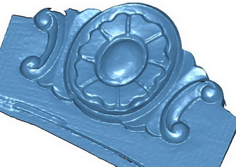Hangi dosya formatlarýný üretir?
ASCII gibi nokta bulutlarý ve OBJ, STL, VRML vb. gibi üçgenlenme nokta bulutlarý. Ayrýca LEIOS yazýlýmý ile, diðer CAD/ CAM / CAE benzeri diðer yazýlýmlar için IGES çýktýsý almanýza imkan tanýr.
3D verilerle ne yapabilirsiniz?
3D veri herhangi bir CAD/CAM/CAE programý ile direkt iþleme (CAM), düzenleme, yeni ürün tasarýmlarý revizyonlar (CAD)ve Analiz (CAE) bu türde programlarýn yapabildiði iþinize uygun benzeri uygulamalar için kullanýlabilirsiniz.
Tarama iþlemi ne kadar sürmektedir?
Tarama çok hýzlýdýr. Sadece 7 saniye sürer.
Tarama alanýndan daha geniþ objeleri nasýl tararsýnýz?
Tarayýcýyla beraber gelen hizalama ve birleþtirme yazýlýmý, taramalarý hizalamak ve birleþtirmek için "benzer özellik tanýmlama" özelliðini kullanýr. Yani, iki tarama arasýnda bir örtüþme ve benzer özellikler olmak þartýyla, yazýlým otomatik hizalama yapabilmektedir. Eðer iki tarama arasýnda yeterince kesiþim veya benzer özellik yoksa, taramalarý hizalamak ve birleþtirmek için yazýlým içindeki iþaretçiler kullanýlýr.
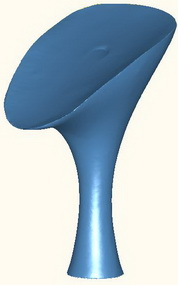REALEScan II ne kadar portatiftir?
REALEScan II yaklaþýk 1.54 kg aðýrlýðýndadýr ve herhangi bir Windows platformuyla "tak ve kullan" þekilde çalýþabilir. Herhangi bir açýyla iç veya dýþ veya herhangi bir ortamda kullanýlabilir. Tripod baðlantýsý yapýlabilir ve yer deðiþtirmesi ve taþýnmasý kolaydýr.
Kimler satýn almalý?
REALEScan ve kullanýþlý tarayýcýlar isteyenler satýn alabilir. REALEScan II, üst düzey bir tarayýcýnýn hýzýný, esnekliðini ve portatifliðini isteyen fakat, Optik serisinin 10-20 mikronluk hassasiyetine ihtiyacý olamayan insanlar içindir.
3D veriyi nasýl yakalar?
Tarayýcý, dönen bir ayna yardýmýyla objeyi uçtan uca süpüren bir laser çizgisi kullanýr. Laser ýþýðý CCD lens kamera ile yakalanýr. Laser çizgisinin açýsýnýn ve CCD lens ile laser arasýndaki mesafenin bilinmesiyle, üçgenleme sayesinde gerçek 3D nokta bulutu hakkýnda bilgi sahibi oluruz.
Eðitime ihtiyacým var mý?
Hayýr. Yeni baþlayanlar bile sistemimizi kullanabilir. Sistemimiz, yazýlýmý yükleyip tarayýcýyý kurduktan hemen sonra taramaya baþlayabilmeniz için tasarlandý. Yine de, kullanýcýlarýn öðrenmesine ve tarama iþlemine hýzla aþina olmasýna yardýmcý olmasý için çok ayrýntýlý Türkçe kullaným kýlavuzlarý ve videolar hazýrladýk. Bunun yaný sýra, eðer teknik destek gerekirse, ileri seviye eðitimli mühendislik personelimiz bulunmaktadýr ve herhangi bir soru veya merakýnýzý seve seve cevaplayacaklardýr. Eðer bir müþterimiz tarayýcýyý kullanarak eðitilmek isterse, Ýstanbul'daki yetkili merkezimize gelebilir ve ek bir ücret ödemeden eðitim alabilir. Bu eðitim, tarayýcý satýn alýndýktan sonra herhangi bir zamanda alýnabilir.
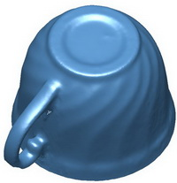Kameralý Scannerler ile Lazer kameralý scannerler arasýndaki fark nedir?
Dünya marketindeki scannerlerin hemen hepsi ayný mantýkta çalýþýr. Tek kameralý, çift kameralý olmasý veya farklý dizaynlarýnýn olmasý, tarama kalitesini deðiþtirmez. Kameralý sistemler, ýþýk kaynaðý isterler ve genelde hepsi Halojen lamba kullanýr, referanslama iþlemleri uzun süreler alýr, her ortamda kullanýlamaz ve portatif yapýda deðillerdir. Iþýk kaynaðý olan lambalarýnýn süreli saat ömrü vardýr ve bir süre sonra deðiþtirilmesi gerekir. Laserli sistemlerde ise 5, 10 25, 60 mW arasý (mili Watt / lazer gücü - yoðunluðu) arasý Class II Endüstriyel laser kullanýr ve 12 mW'dýr. Her ortamda kullanýlabilinir ve ömrü çok uzundur. Özellikle 55-60 mW Kullanan laser sistemler kilometrelerce yeri scan edebilir.
REALEScan II, için öðrenme eðrisi nasýldýr?
Bir önceki soruda belirtildiði gibi, çok kýsa bir öðrenim eðrisi mevcuttur. Yazýlýmýn anlaþýlmasý kolaydýr. Müþterilerimizin yorumlarý, 1 saatin altýnda bir sürede profesyonel kalitede taramalar yapabildiklerini göstermektedir.
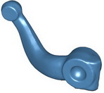Katý modelleme programlarýyla uyumlu mu?
Evet. çoklu dosya formatlarýný kaydedebilir ve bu nedenle bir çok katý modelleme programý ile kullanýlabilir.
Elektrik Voltaj çeviricisine ihtiyaç duymadan 110 ve 220 Volt'un her ikisiyle de çalýþabilir mi? Güç birimi, 110 ve 220 Volt'un her ikisiyle de sorunsuz çalýþmaktadýr.
Tarayýcý parlak veya koyu renk objeleri tarayabilir mi?
Evet. Yine de, daha fazla hassasiyet elde etmek için, objenin yansýtýcýlýðýný arttýrmak için objeyi tebeþir tozuyla veya herhangi bir mat þeyle kaplamanýzý öneririz.
"Color Texture" opsiyonu var mý?
Evet. Ek bir ücret karþýlýðýnda "color texture" sunmaktayýz.
Saydýklarýnýz çok profesyonel, Fiyatý nedir? Nasýl alabilirim? Yukarýda saydýklarýmýzýn, opsiyonel yazýlýmlar dahil (notebook bilgisayar hariç) Türkiye marketinde satýlan, orta ölçekli bir CAD/CAM sistemine ayýrdýðýnýz bütçe ile aynýsý.
Piyasada bazý çok ucuz markalar mevcut bunlara göre farký nedir? RealEScan II bir hobi / hobby ürünü deðildir üst düzey mühendislik ürünüdür ve ciddi tersine mühendislik çalýþmalarýnýz için kullanýlýr. Eðer, merak veya hobi ürünü arýyorsanýz, sistemimiz size uygun deðildir.
Ürünü hangi ortamlarda kullanabiliyoruz?
RealEscan II'nin en farklý özelliklerinden biri, Her ortamda kullanabilir olmanýz, Ev, Ofis, Atölye ortamý, Aydýnlýk, karanlýk ortamda, gün ýþýðýnda veya gece. Portatif ve kolay taþýnabilir olmasý koruyuculu kalýn plastik çantasý ile her yerde yanýnýzda.
Bazý sektörel 3D tarama örnekleri (STL dosyalar)
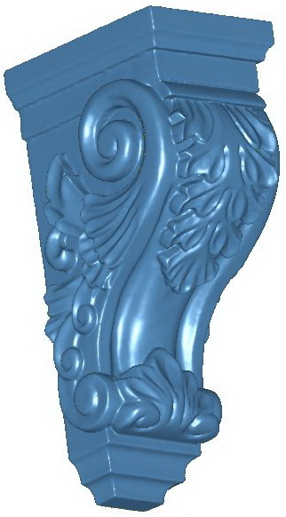
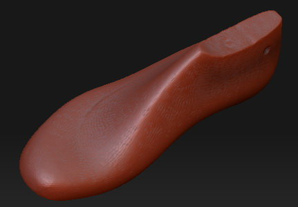
Ayakkabý kalýbý
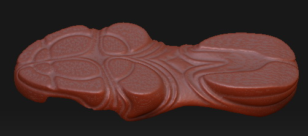
Ayakkabý tabaný
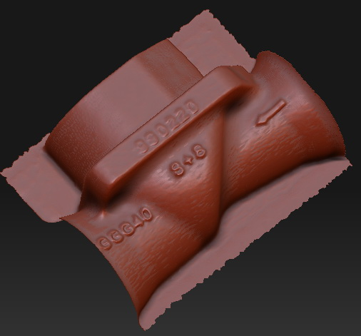
Döküm parça
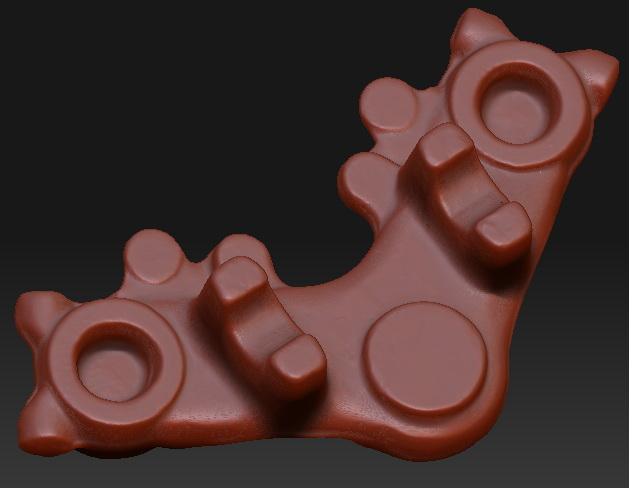
Dövme parça
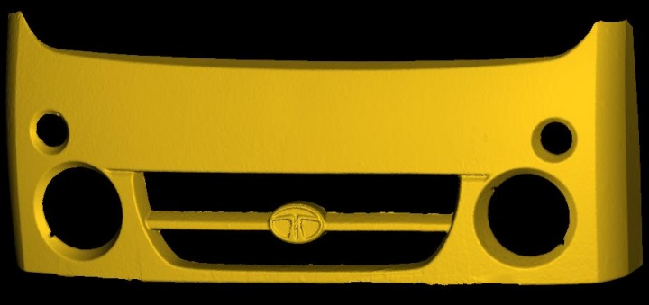
Otomotiv - ön ýzgara
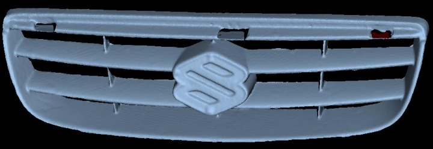
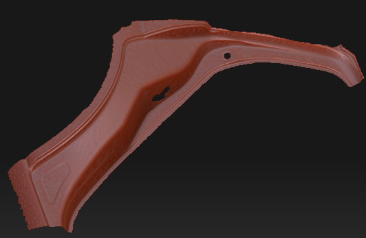
Otomotiv - arka panel
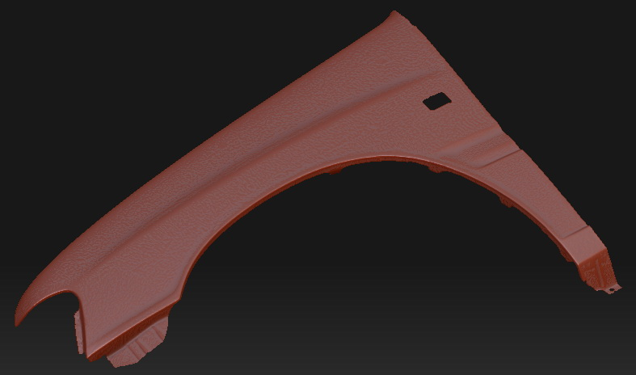
Otomotiv - yan panel
|